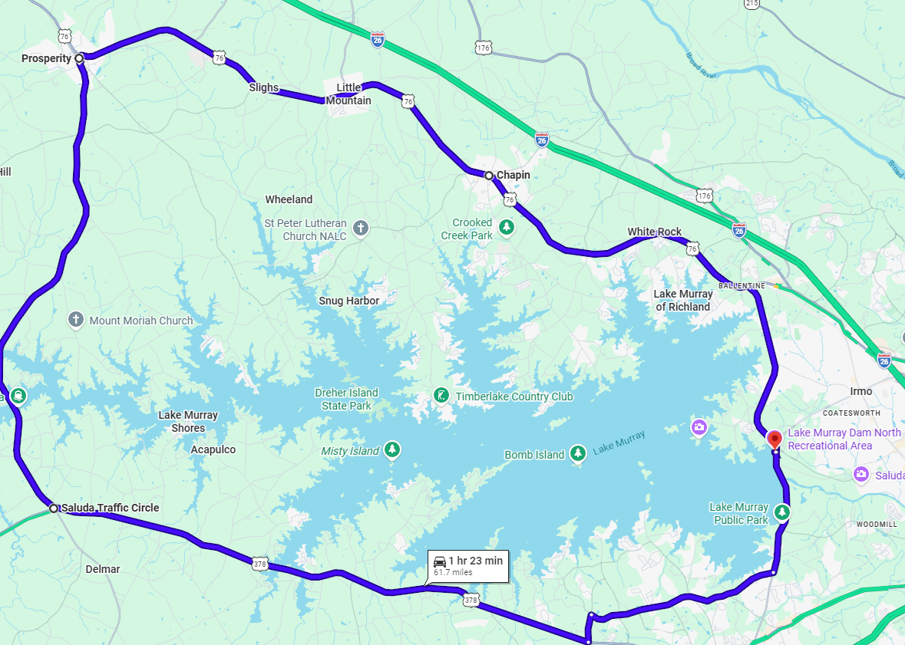
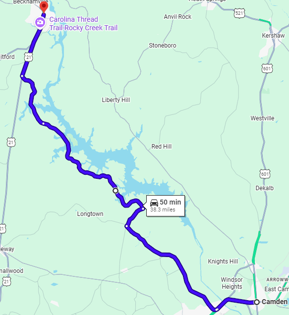
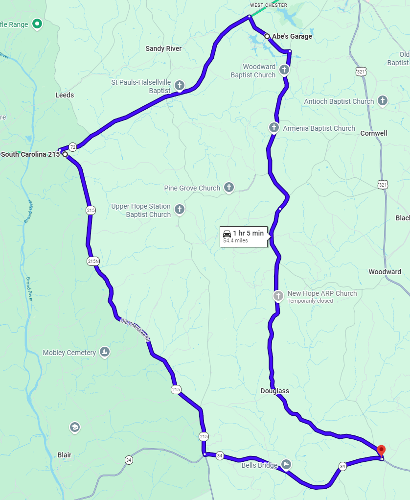

Lake Murray Loop

62mi
Difficulty: 1/5
Traffic: 3/5
Plenty of places to stop
Side roads are more challenging, but may dead-end
Good views of lake

62mi
Difficulty: 1/5
Traffic: 3/5
Plenty of places to stop
Side roads are more challenging, but may dead-end
Good views of lake


40mi
Difficulty: 3/5
Traffic: 1/5
Limited stops and gas
Low traffic but few safe passing zones


55mi
Difficulty: 2/5
Traffic: 2/5
Fast sweepers
Limited stops and gas
Watch for driveways and sand
